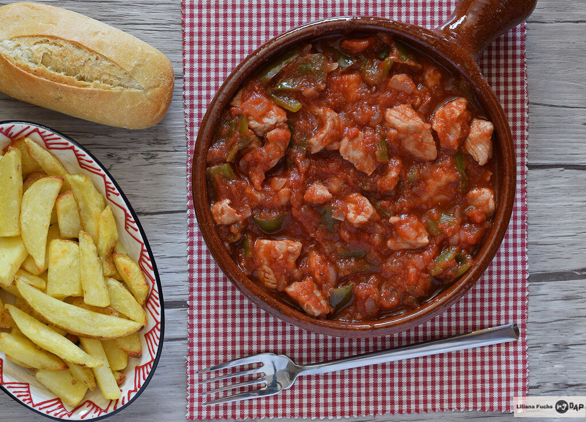

En tradisjonsrik spansk tapasrett som mange kjenner igjen fra Andalucia
Dette er en av de tradisjonelle tapasrettene man får servert gratis ved siden av en
kald øl i provinsen Granada i Andalucia. Den anbefales servert med pommes frites
og aioli, og noe godt i glasset.
Ingredienser:
- 2 bokser med hakkede tomater
- 2 fed hvitløk
- 500 gr indrefilet av svin
- 2 laubærblad
Fremgangsmåte:
- Hakk opp alt i biter
- Fres opp litt olje i kaserollen,
og når oljen begynner å frese tilsetter du alle ingrediensene
- La det småkoke i 1.5 timer